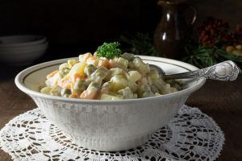

Odin Recipes
Olivye

Description
Olivye a traditional Russian dish made up of several diced meat and vegetabes.
Potatoes, peas, carrots, and bologna are frequently used. and then mayonaise is added.
I remember growing up and eating this salad at family gatherings.
Ingredients
- 1lb of bologna
- 3 medium potatos
- boiled eggs
- peas
- pickles
- green oinion
- dill
- mayo
Steps
- Boil potatoes and carrots
- Skin potatoes and carrots
- Dice bologna, carrots, potatos, pickles, and eggs
- Mix together diced ingredients with mayo and dill
- Add peas last
- Add salt to taste